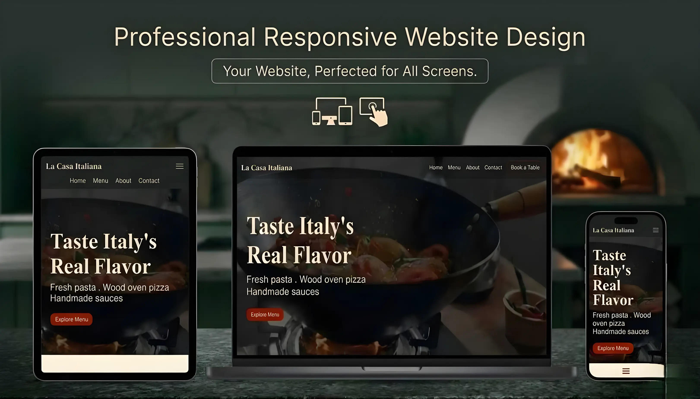
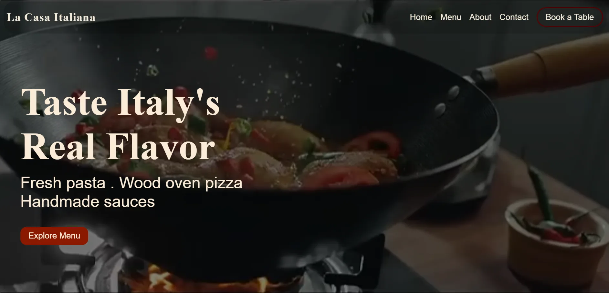
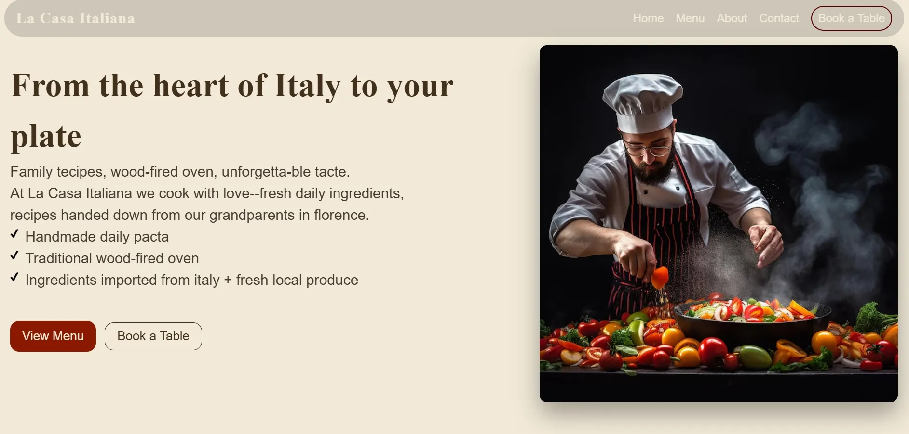
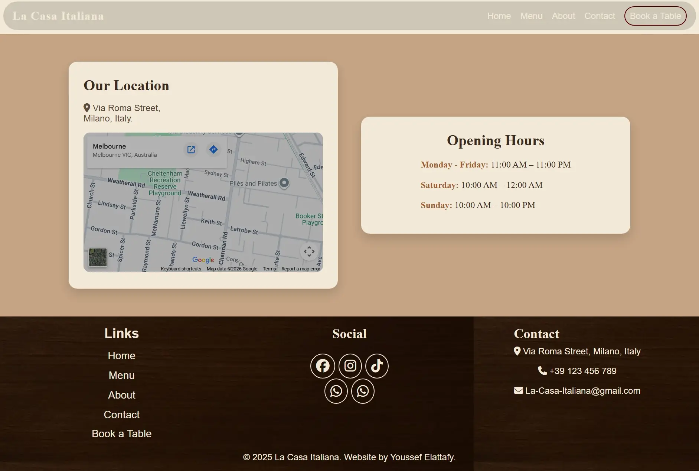
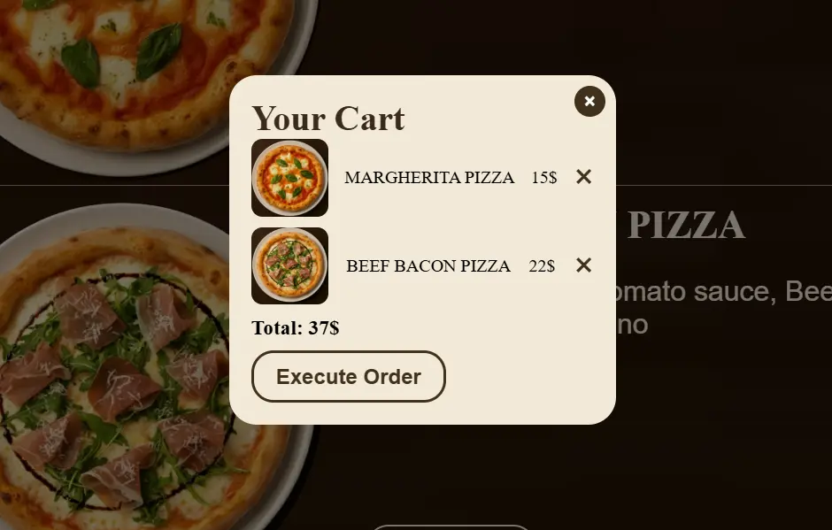
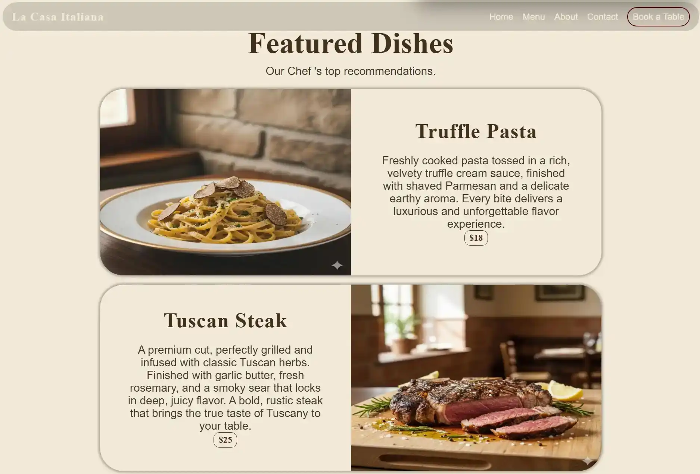
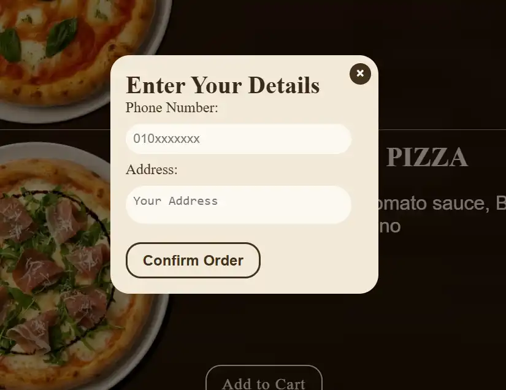
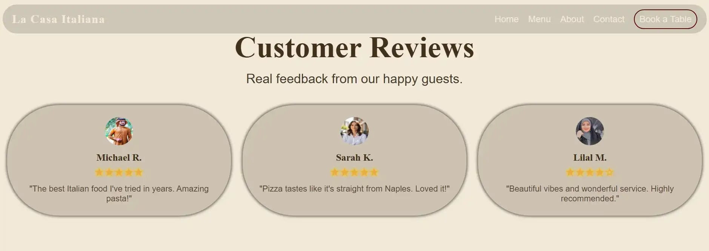

Italian
Restaurant Experience
Project Identity / 2025
An all-in-one Italian web platform crafted for seamless browsing, elegant design, and a refined user experience across all devices.








Engineered for
0.4s LCP
The Narrative
The website features a modern and visually appealing Italian-inspired design with a smooth and intuitive user interface. It includes an engaging hero video that showcases the cooking process, immediately capturing the visitor’s attention. The structure highlights the chef’s profile with a brief overview of experience and professional background, along with a curated selection of signature dishes presented in high-quality visuals. Customer reviews are integrated to build trust and credibility, while the interactive menu allows users to filter dishes by category and add items to the cart seamlessly.
The platform also supports a simple and efficient ordering flow where users enter their phone number and address, and the order is instantly sent to the restaurant via WhatsApp. A table reservation system is included, allowing customers to select the number of guests and confirm their booking with assigned table details. The website is fully responsive across all devices, ensuring smooth performance on mobile, tablet, and desktop. A well-structured footer provides navigation links, section shortcuts, contact details, and the restaurant address, while subtle animations enhance the overall user experience and interactivity.
99.9%
Uptime Target
45%
Conv. Increase
Stack
HTML + CSS + JavaScript + PHP
Type
PHP Backend
Key Functionalities
Fresh Ingredients Daily
Carefully sourced fresh ingredients prepared daily to deliver exceptional flavor and consistent quality in every dish.
Instant WhatsApp Ordering
Seamless order placement that instantly connects customers with the restaurant via WhatsApp for fast, direct communication and confirmation.
Responsive Fluid Layout
A flexible layout that automatically adjusts to any screen size for a smooth experience across all devices.
High-Performance SSR
High-performance server-side rendering (SSR) that ensures ultra-fast page loads and significantly improved website performance and user experience.